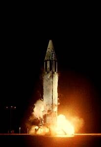

The Mission
The rocket carrying Gordo into space would take off from the Atlantic Missile Range at Cape Canaveral, travel further than any monkey had ever travelled before - over 1,500 miles - and reach a height of 310 miles (500 km) before returning to Earth and landing in the South Atlantic, 1,302 nautical miles south of Cape Canaveral.
"We all heard the rumors that they want to send a monkey up first. Well, none of us wants to think that they're gonna send a monkey up to do a man's work ... what they're trying to do to us is send a man up to do a monkey's work."
Deke Slayton, Mercury Seven Astronaut
The Jupiter AM-13
The Jupiter IRBM (Intermediate Range Ballistic Missile) was originally developed by the US Army as a long-range successor to its PGM-11 Redstone missile, but was eventually taken over and deployed by the USAF for political reasons. It was also the only one of the United States' early stategic ballistic missiles with some mobility.
The Journey
Gordo wore a specially customised space suit custom made for a monkey about one foot tall. The space suit was fitted with instruments, including temperature meters and microphones which recorded his historic suborbital journey, considered one of the outstanding achievements of space research.